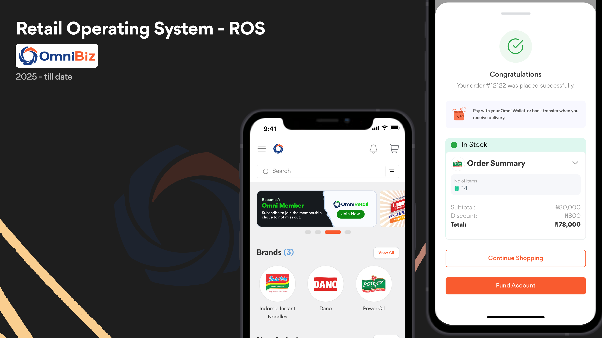
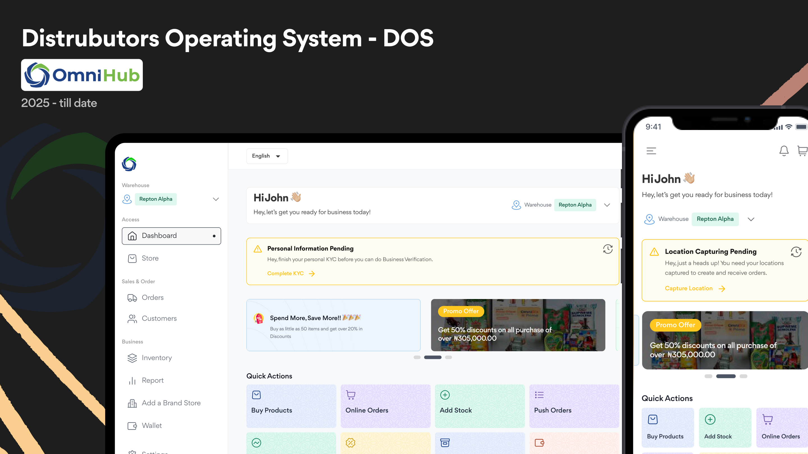
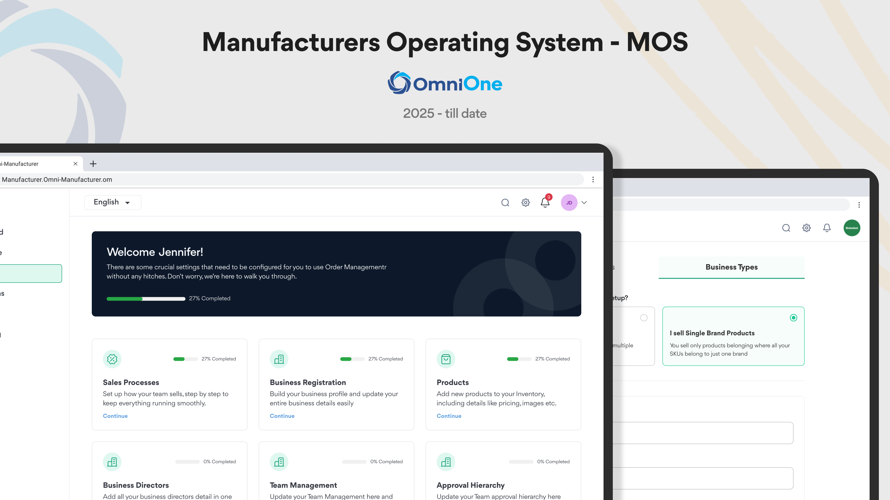
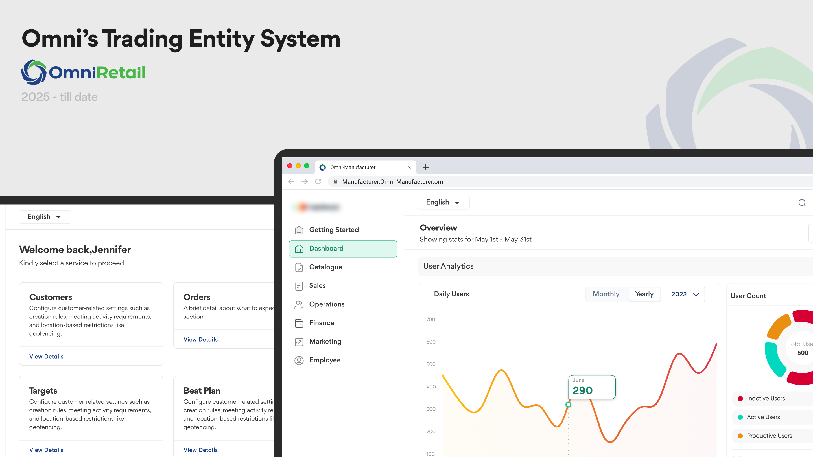
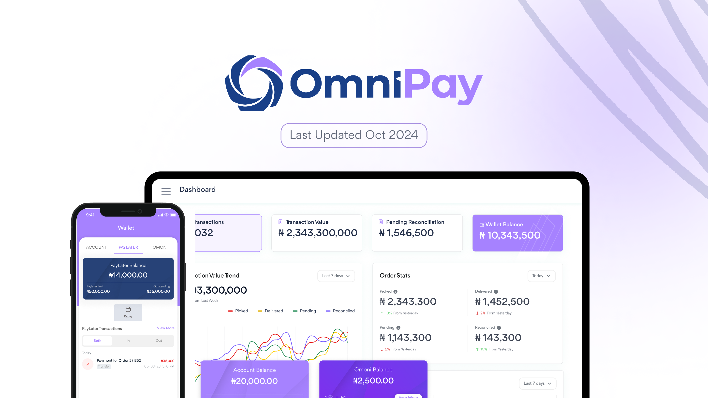
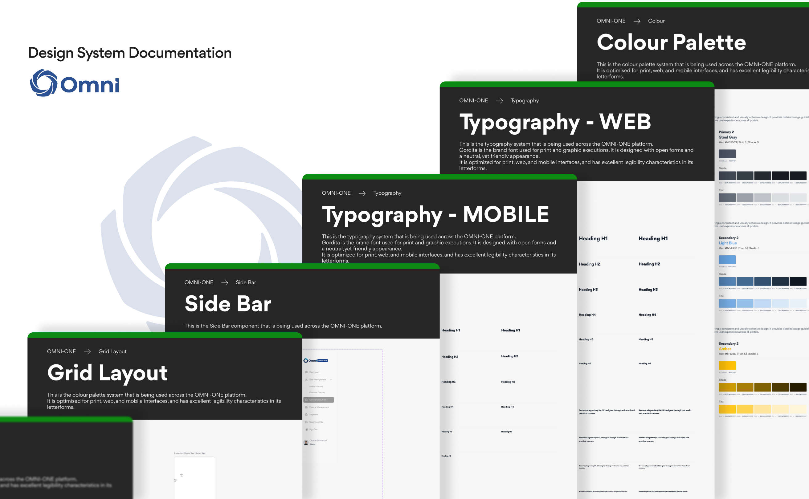
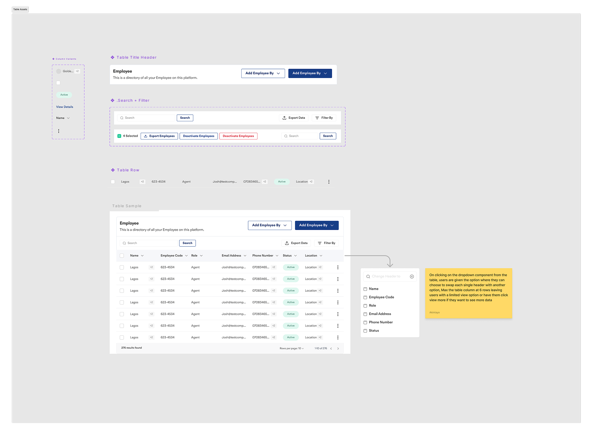
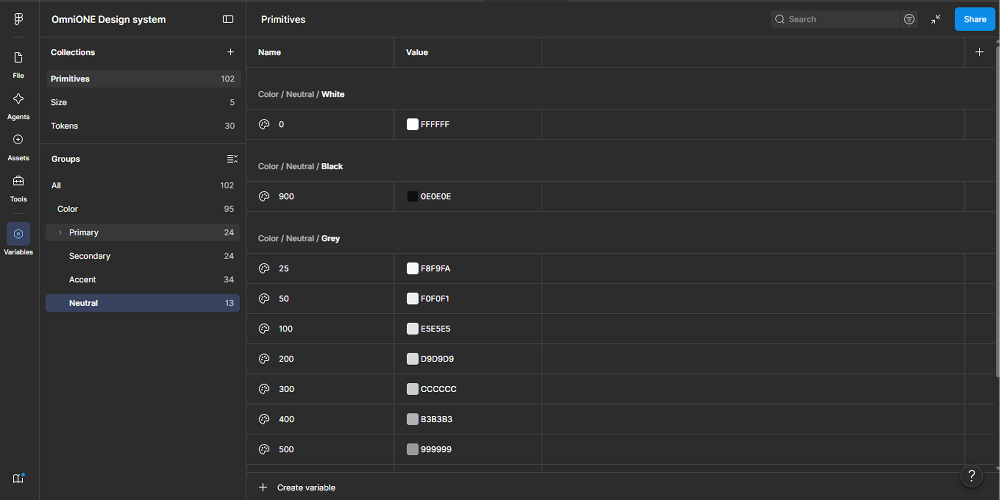
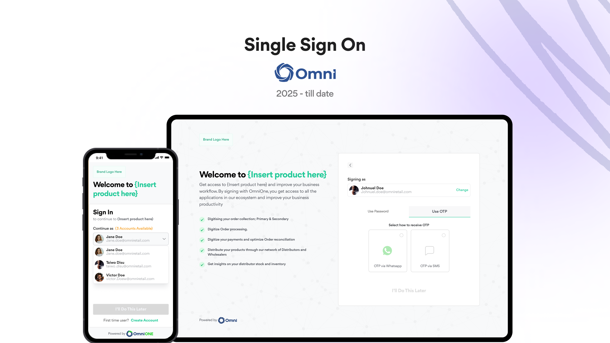

OmniRetail · Internal Design System
Read the 2024 version →One Design Language For Four Product Teams
By 2024 OmniRetail's design work was spread across five product surfaces owned by four different teams, each shipping on its own timeline, with its own interpretation of what a "primary button" should look like. Omnione is the design system we built to give all five one language. I owned the foundation layer, colour, typography, grid, table rows and columns, and the sidebar, the pieces every other designer had to build their own library on top of, and the pieces engineering turned into tokens. Designed through 2024; the revamped products launched on it in 2025.
The Five Surfaces
OmniRetail isn't one app. It's an operating system for each side of the trade, retail, distribution, manufacturing, plus the payment rail underneath and the internal tool that administers all three. Any design system here had to serve four teams whose users have almost nothing in common except the data flowing between them.
Retail Team
Omnibiz App · ROS
Distribution Team
OmniHub · DOS
Manufacturer Team
OmniOne · MOS
Payments Team
Omnipay App
Plus the internal tool
Trade Entity · internal management for ROS, MOS and DOS





Problem
Each surface had been designed and built independently, under deadline pressure, with no shared source of truth to pull from. That is not a failure of discipline, it is what happens when four teams ship in parallel and nobody owns the layer underneath them. The cost showed up in three places at once.
Divergent Visual Language
The same component meant different things on different surfaces. A user moving between Omnibiz and Omnipay was effectively learning two products.
Rebuilt, Not Reused
Every team rebuilt basic primitives from scratch, buttons, inputs, tags, and above all tables, because there was nothing to inherit.
No Token Contract
Engineers received slightly different specs for the same element depending on which designer produced the screen, so there was nothing stable to build tokens from.
Structure
We structured Omnione on atomic design, because it gives a multi-team system something more useful than tidy folders: a dependency order. Foundation has to be settled before anyone can build an atom; atoms before molecules. That order is what made it possible to parallelise the work across four teams without everyone blocking on everyone else.
- 01 Foundation Colour, typography, grid, spacing, elevation. The layer I owned.
- 02 Atoms Buttons, inputs, checkboxes, tags, icons, the indivisible pieces.
- 03 Molecules Search + filter bars, form rows, table cells, dropdown menus.
- 04 Organisms Full tables, sidebars, headers, modals, bulk-action toolbars.
- 05 Templates Page-level patterns each team composed their own screens from.

What I Owned
I was responsible for the foundation: colour, typography, grid, table rows and columns, and the sidebar. These were deliberately assigned rather than divided evenly, and the reason matters. Foundation items are the ones with the most dependants, every other designer needed them settled before they could build their own portion of the library, and engineering needed them stable before writing a single token.
In practice that made the job as much about sequencing and negotiation as about craft. Getting colour and type wrong would not have been a visual problem; it would have been a re-work problem multiplied by four teams. So the foundation shipped first, was validated against real screens from each surface before being locked, and was versioned from that point on.
Colour
Semantic roles, not raw hex, so a status colour meant the same thing on a retailer's order and a manufacturer's dispatch.
Typography
One scale across five surfaces, sized for dense B2B tables rather than marketing pages.
Grid
A shared layout grid so screens built by different teams still lined up when placed together.
Table Rows & Columns
The most-used organism in the entire ecosystem, and the one every team had been rebuilding. Covered in detail below.
Sidebar
The persistent navigation frame each operating system sits inside, built to hold different information architectures without changing shape.
Highlight · The Table System
In a B2B operating system the table is the product. Retailers, distributors and manufacturers all spend their day in one. So rather than design a table, I designed a column system: a set of variants covering every way a cell needs to present data, so any team could compose a table for their use case without inventing a new cell.

The variants covered text only, text with a label or status pill, text with a leading icon, text with an avatar, icon only, a title style for the primary identifying column, sortable headers, overflow counters for multi-value cells, selection checkboxes, and a row-level actions menu. Around them sit the table's own organisms: the title header, the search and filter bar, and the bulk-selection toolbar that appears once rows are selected.
The Decision
We capped the visible table at six columns and gave users a header dropdown to swap any column for another, rather than letting each team add columns until the table overflowed. Density is the obvious answer in B2B and it is usually the wrong one, an unreadable table full of data serves nobody. The cap forced every team to decide what actually mattered by default, and the swap kept the rest one click away instead of gone.
The column set was not finished when it shipped. It was versioned and extended as new use cases surfaced across the four teams, which is the part that made it a system rather than a component. Each new request was resolved either by an existing variant or by adding one to the library for everyone, never by a team building a local one-off.
Tokens & Engineering Handoff
A design system that only lives in Figma is a style guide. The point of settling the foundation first was so engineering could define variables once and develop every app against them. I defined the variable assets in Figma so the foundation exported as a token contract rather than a set of screenshots, colour roles, type scale, spacing and grid all resolvable by name.


Outcome
Handoff Time
−40%
Reduction in design-to-engineering handoff time once teams built against tokens instead of interpreting screens.
Auth Support Tickets
−30%
Cut by the unified SSO built on the shared foundation, with product-specific brand colour blended into one entry point.
White-Label Delivery
−50%
Per-partner delivery time for brand-customisable retail apps (Guinness, Flour Mills of Nigeria, Lush) from the shared foundation.
Business Apps
5+
Token-based theming and WCAG 2.1-compliant patterns scaled across the ecosystem.
Retailers Served
150K+
Plus 145 manufacturers and 5,800+ distributors across Nigeria, Ghana and Ivory Coast.
Designed / Launched
2024 → 2025
Built through 2024; the revamped products shipped on the system in 2025.
The system did not slow the teams down, which was the constraint that mattered most. Because the foundation landed first, each team could build their own library section in parallel against a stable base, and engineering could develop against tokens instead of interpreting screens.
What Would Prove This Wrong
The bet was that owning the foundation centrally would unblock four teams rather than bottleneck them. If teams had routinely shipped local overrides instead of requesting library additions, that would mean the foundation was too rigid for the range of surfaces it served, and the fix would be a documented extension path per team, not a stricter library.
Other Projects